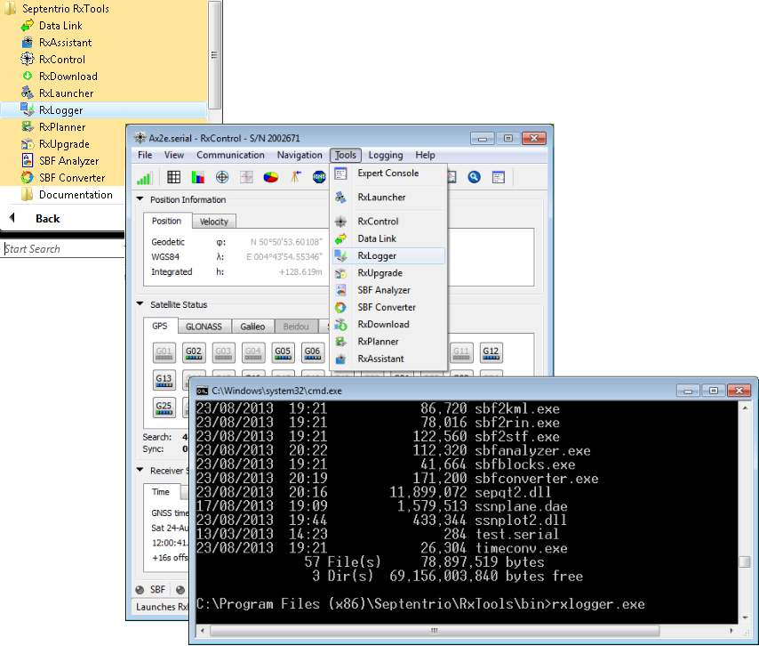

[
prev
] [
up
]
6.1.3
RxLogger Return Codes
The possible return codes of RxLogger are:
Value
Description
-1
There was an error while parsing the command line options.
0
There were no errors while parsing the command line options.
Table 6.1-1:
RxLogger return codes

Figure 6-2:
Launching the RxLogger GUI
[
prev
] [
up
]